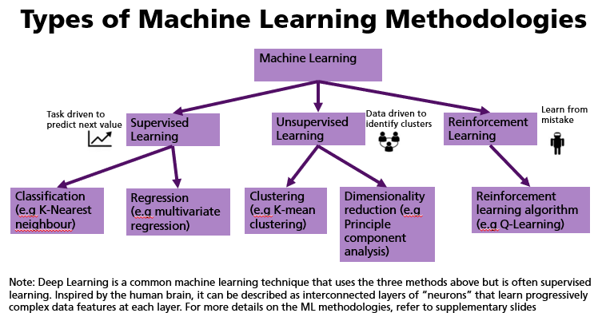

Many times, we have associated data analytical tools as a kind of Artificial intelligence. For data analytical tools, their key focus is to use statistical technique to glean insights and inference. As for AI, its key focus is to build a system for inputs and outputs that mimic human to hear, see, analyse and so on. For more details on AI, you can go to the section on upcoming technologies
1. Machine learning(ML) in Data Science projects uses ML algorithms to perform data modelling to extract knowledge and insights.
2. While ML in AI projects is often productionised, resulting in AI systems producing an output, with a given input.
What are some of the Machine Learning Methodologies?
Before we select any ML methodologies (e.g knn, regression, moving average), we will need to know what are we trying to find out (e.g what happened, or what will happen?). With that in mind, we can then better choose one of the ML types as shown below.

The following is a list of top ML frameworks recommended by Gartner